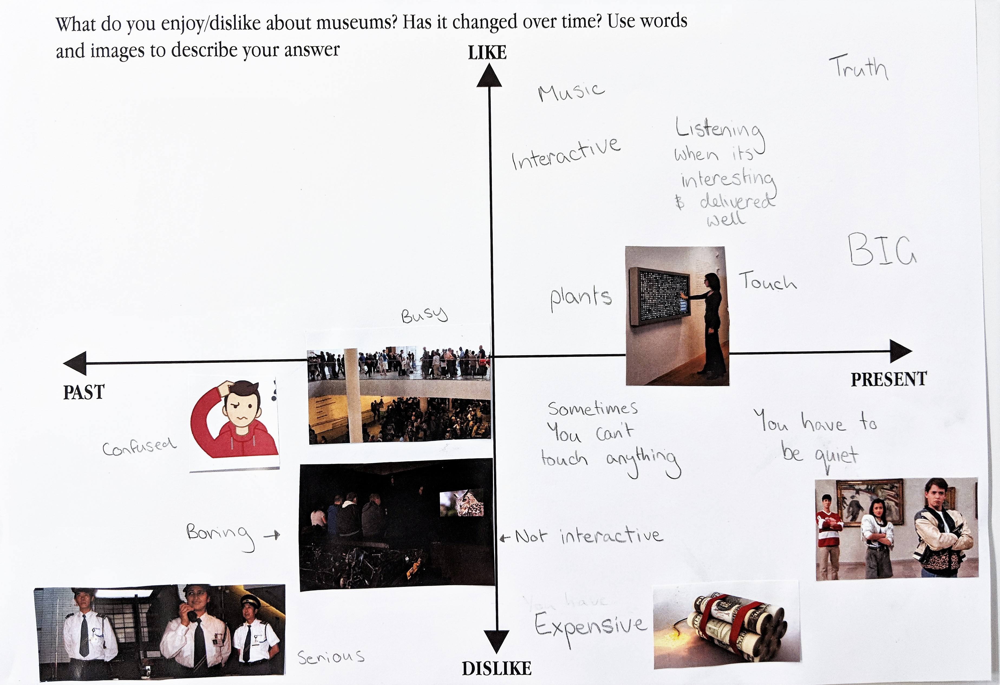

UX Design Studio 2018
Team: Darren Phung / Pat Hwang
Role: UX / UI / Visual Design / Visual Effects
After our visit to the Sydney Jewish Museum, we created storyboards that would highlight the pain points of the user experience and begin getting an idea of our target users.
Through group discussion we decided to focus on the 18-25 year old demographic and their seemingly reduced use of museums and exhibitions.
To understand our users and their thoughts on museums in general, we must conduct user research.
We decided on using the general method setting up a generative session as well as giving participants
sensitising booklets a week/few days before the session.
Sensitising booklets are used gather basic and highly personal information from participants.
The generative sessions consisted of two exercises which were cognitive mapping and collage.
The Cognitive map plots the participants last visit to a museum or exhibition on a timeline.
This timeline would be mapped from the participants entering the museum and leaving the museum.
The collage exercise was given seemingly random assortment of pictures and words where the participants felt where it should be placed on the collage where to provides a horizontal like/dislike axis and vertical past/present axis.
Following the generative sessions, we had to analyse the transcripts to fully understand the user needs of our demographic. We noted down key quotes and problems onto statement cards for a more organised workflow.
Statement cards are grouped into categories to highlight themes and areas of concern. Ultimately, we found 2 key issues where the statement cards were able be categorised.
The research visualisation communicates the categories identified from the affinity diagramming. The visualisation is divided into two halves where the top half displayed the positive areas of the analysis and the bottom half the negative. It’s important to capture research insights in a way that is easy for everyone to understand.

We utilised the Harris profile in order to choose which concept we want to pursue from:
Our Decision Matrix shows that the best concept was the Projector Visualisation.